Yamatokoriyama, Nara: things to do, food and stays
Yamatokoriyama · Nara
Yamatokoriyama
Highlighted on the Nara map.
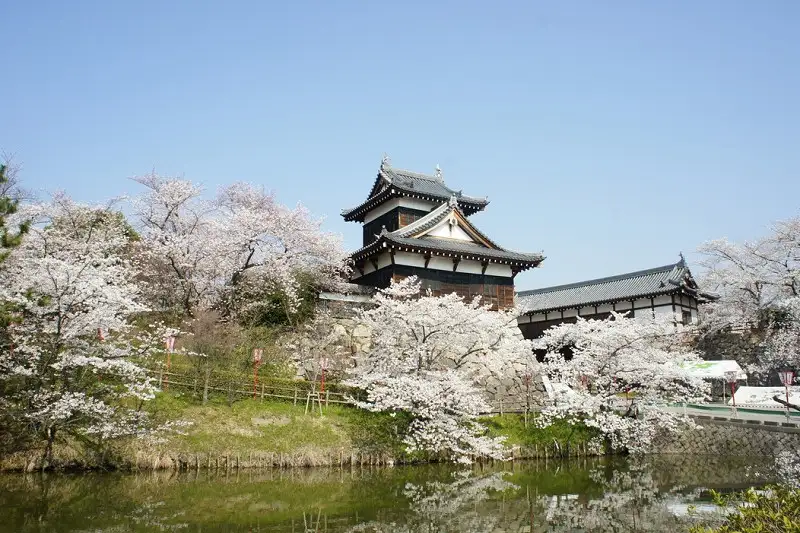
Stay
天然温泉 湯元・大納言秀長の湯 スーパーホテル奈良・大和郡山
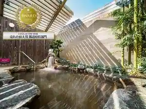
Tennen Onsen Yumoto Dainagon Hidenaga No Yu Super Hotel Nara Yamatokoriyama
Hotel in Sugi, Yamatokoriyama with breakfast available and parking.
Dining
がむしゃら 奈良
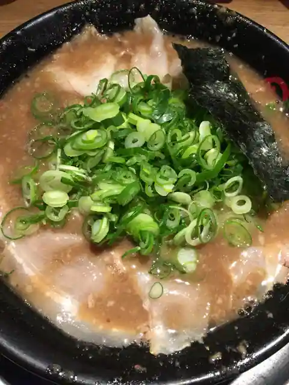
Gamushara Nara
満天うどん カジバノバカヂカラ
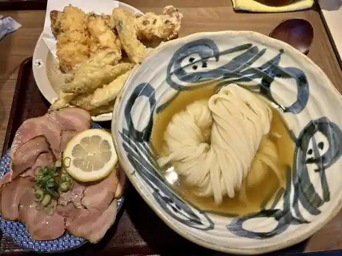
Manten Udon Kajibanobakajikara
フジエダハウス
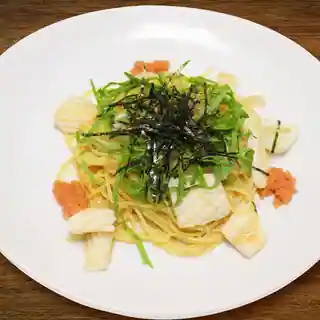
Fujieda House
花一番 郡山店
Hana Ichiban Koriyama
とんまさ
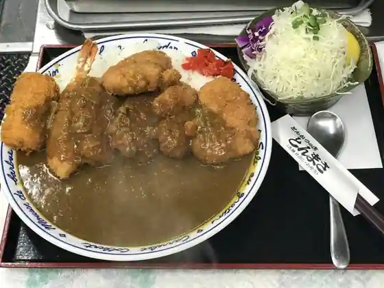
Tonmasa
古民家らーめん春友流
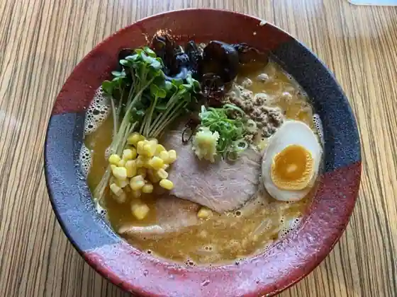
Ko Minka Ramen Harutomo Ryu
カフェ&キッチン マナビ
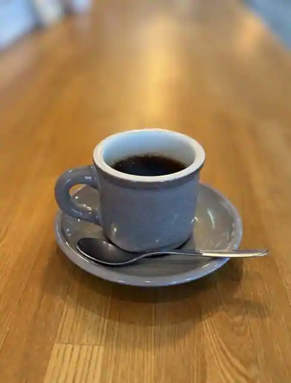
Cafe & Kitchen Manabi
わらじや
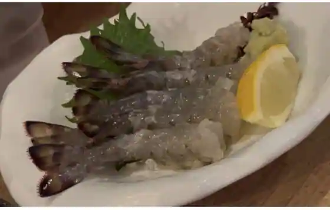
Warajiya
豚の骨
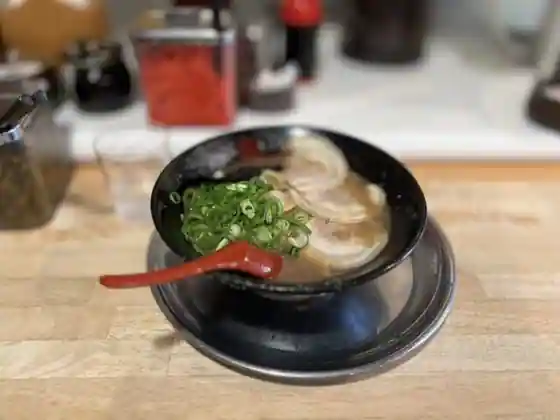
Buta No Hone
麺屋 NOROMA イオンモール大和郡山店
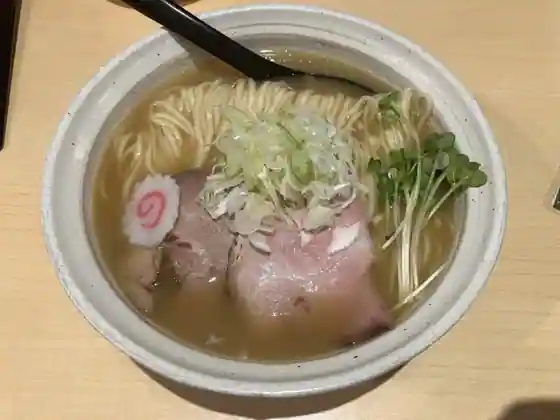
Men Ya NOROMA Ionmoru Yamatokoriyama
大門
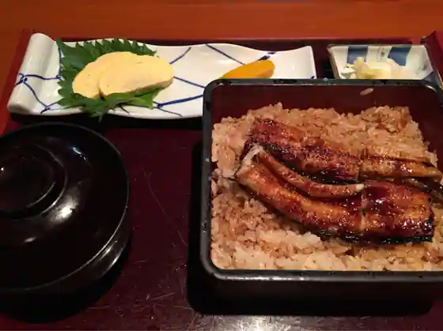
Daimon
うなぎ川はら 大和郡山店
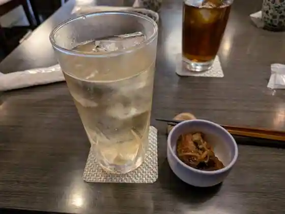
Unagi Kawa Hara Yamatokoriyama
そば楽
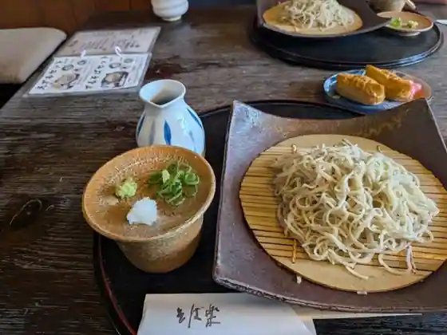
Soba Raku
カフェ プランタン
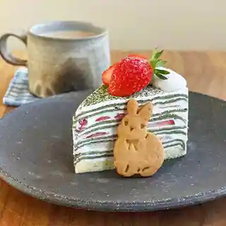
Cafe Purantan
tabi tabi
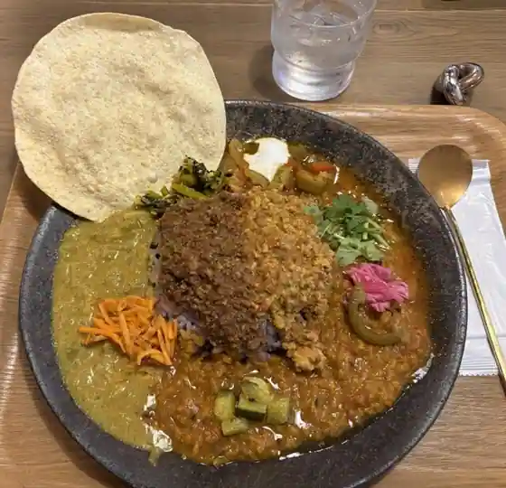
tabi tabi
夢っ志愈亭
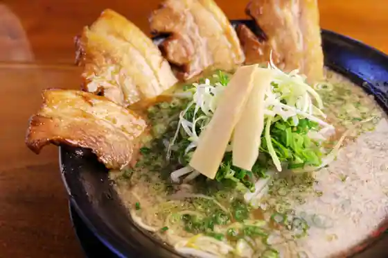
Yume Tsu Kokorozashi Yu Tei
スエナミ
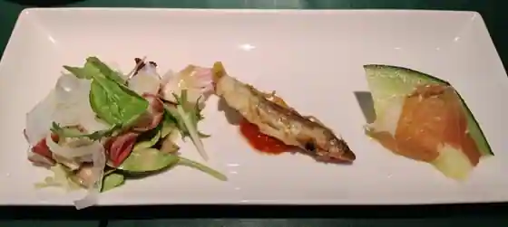
Suenami
ころっけのハヤシ
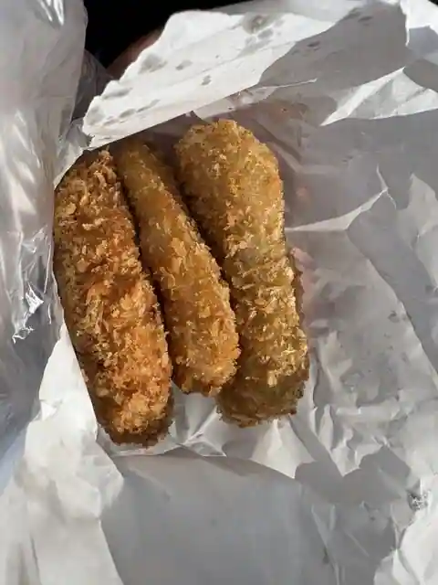
Korokkeno Hayashi
麺屋 あまのじゃく 大和郡山店
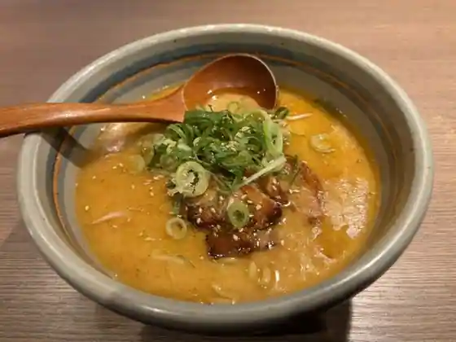
Men Ya Amanojaku Yamatokoriyama
PISOLA 大和郡山筒井店
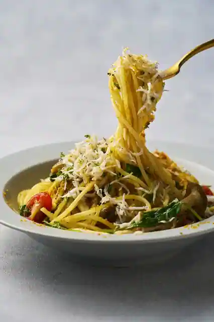
PISOLA Yamatokoriyama Tsutsui
サンプーペー
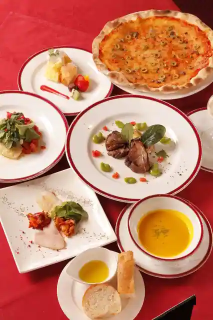
Sanpupe
博多長浜らーめん 夢街道 大和郡山店
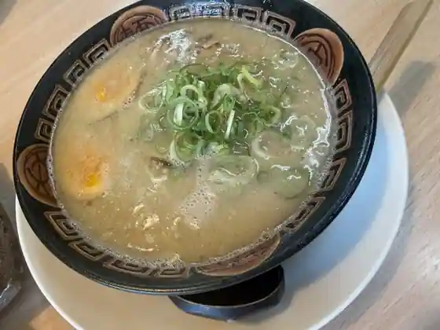
Hakata Nagahama Ramen Yume Kaido Yamatokoriyama
和カフェモリカ
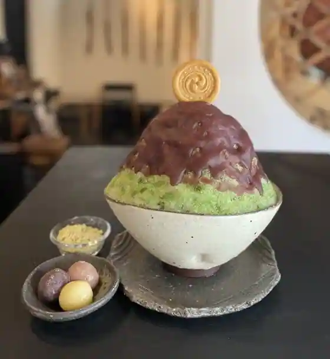
Wa Cafe Morika
旬恵
Jun Megumi
Sights
Koriyama Castle Ruins
Jiko In
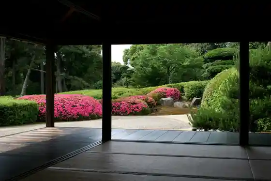
Matsuo Tera
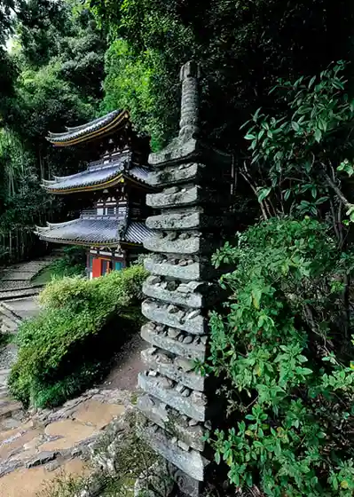
Hora Izumi Tera
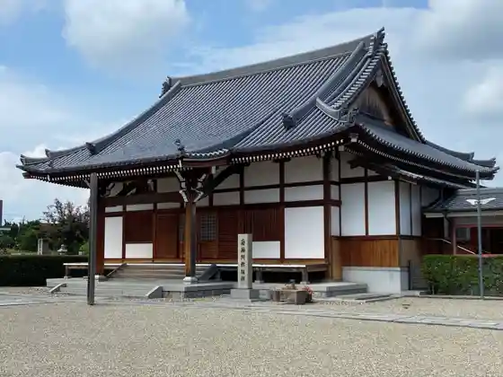
Yada Tera
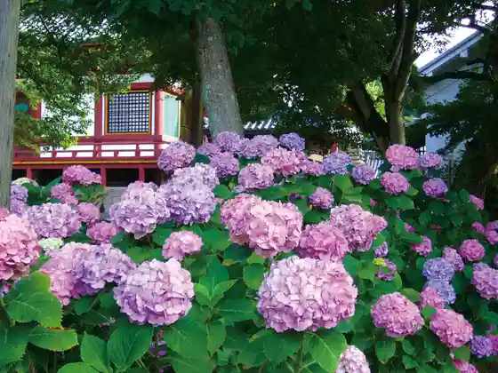
Yamatokoriyama General Park Tamokuteki Gym (Kingyo Sukuea)
Tomei Tera
Jokei Tera
Nara Prefectural Minzoku Museum
Yamatokoriyama Choka Monogatari Kan
Prefectural Yamato Minzoku Park
Yamatokoriyama Tateri Yama no Eki Kaze Tombo Yagaikatsudo Center
Koriyama Kingyo Museum
Yakuen Hachiman Shrine
Hako Honkan (Koya)
Hitai An Tera